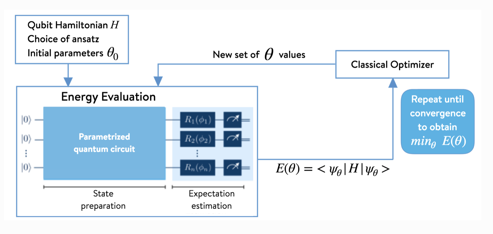
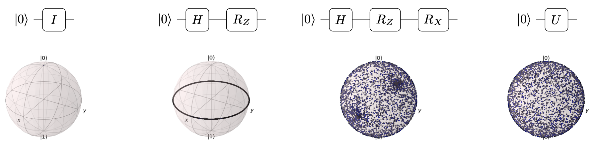

Topic 4. Variational Quantum Eigensolver#
Instructor : Hwajung Kang, Ph.D., Education Delivery Program Manager, IBM Quantum
from qiskit import *
from qiskit.circuit import Parameter,ParameterVector
from qiskit.circuit.library import EfficientSU2
from qiskit.result import sampled_expectation_value
from qiskit.quantum_info import Statevector, DensityMatrix
from qiskit.opflow import X, Y, Z
from qiskit.quantum_info import SparsePauliOp
from qiskit.visualization import plot_error_map
from qiskit.visualization.bloch import Bloch
import numpy as np
import numpy.linalg as la
import matplotlib.pyplot as plt
from scipy.optimize import minimize
-
What is VQE?
- VQE, Variational Quantum Eigensolver, uses variational method to approximate ground state of Hamiltonian.
- Chemistry and material science : Finding the ground state and energy given Hamiltonian
- Optimization problem : Finding the optimal solution of the problem encoded as a Hamiltonian
Applications
Workflow#

Part 1. No noise#
backend = Aer.get_backend('aer_simulator')
Ex 1. Estimate the ground state of one qubit system and its energy for the given Hamiltonian, \(H=2X\).#
Exact Answer#
sX = np.array([[0, 1],[1, 0]])
H = 2*sX
eigvals, eigvecs = la.eigh(H)
print('The ground state energy of H : {}'.format(np.round(eigvals[0], 3)))
print('The ground state of H : {}'.format(np.round(eigvecs[:, 0], 3)))
The ground state energy of H : -2.0
The ground state of H : [-0.707 0.707]
Using VQE#
Step 1. Ansatz - State Preparation
Choice of ansatz
Xop, Yop, Zop = X.to_matrix(), Y.to_matrix(), Z.to_matrix()
def state_to_bloch(state_vec):
phi = st.data
bx = phi.conjugate() @ Xop @ phi
by = phi.conjugate() @ Yop @ phi
bz = phi.conjugate() @ Zop @ phi
return [bx, by, bz]
theta = Parameter('θ')
angs = np.linspace(0, 2*np.pi, 150)
qc = QuantumCircuit(1)
qc.h(0)
qc.p(theta, 0)
qc.h(0)
print(qc)
st_all = [Statevector.from_instruction(qc.assign_parameters([ang])) for ang in angs]
fig = plt.figure()
ax = fig.add_subplot(1, 1, 1, projection='3d')
b = Bloch(axes=ax)
b.point_color = ['tab:blue']
b.point_marker = ['o']
b.point_size =[2]
for st in st_all:
v = state_to_bloch(st)
b.add_points(v)
b.show()
┌───┐┌──────┐┌───┐
q: ┤ H ├┤ P(θ) ├┤ H ├
└───┘└──────┘└───┘
Reference: Parametrized Quantum Circuits
# First, we need to define the circuits:
theta_param = Parameter('θ')
phi_param = Parameter('Φ')
# Circuit A
qc_A = QuantumCircuit(1)
qc_A.h(0)
qc_A.rz(theta_param, 0)
# Circuit B
qc_B = QuantumCircuit(1)
qc_B.h(0)
qc_B.rz(theta_param, 0)
qc_B.rx(phi_param, 0)
print(qc_A)
print(qc_B)
# Next we uniformly sample the parameter space for the two parameters theta and phi
np.random.seed(0)
num_param = 1000
theta = [2*np.pi*np.random.uniform() for i in range(num_param)]
phi = [2*np.pi*np.random.uniform() for i in range(num_param)]
# Then we take the parameter value lists, build the state vectors corresponding
# to each circuit, and plot them on the Bloch sphere:
from qiskit.visualization.bloch import Bloch
from qiskit.quantum_info import Statevector
def state_to_bloch(state_vec):
# Converts state vectors to points on the Bloch sphere
phi = np.angle(state_vec.data[1])-np.angle(state_vec.data[0])
theta = 2*np.arccos(np.abs(state_vec.data[0]))
return [np.sin(theta)*np.cos(phi),np.sin(theta)*np.sin(phi),np.cos(theta)]
# Bloch sphere plot formatting
width, height = plt.figaspect(1/2)
fig=plt.figure(figsize=(width, height))
ax1, ax2 = fig.add_subplot(1, 2, 1, projection='3d'), fig.add_subplot(1, 2, 2, projection='3d')
b1,b2 = Bloch(axes=ax1), Bloch(axes=ax2)
b1.point_color, b2.point_color = ['tab:blue'],['tab:blue']
b1.point_marker, b2.point_marker= ['o'],['o']
b1.point_size, b2.point_size=[2],[2]
# Calculate state vectors for circuit A and circuit B for each set of sampled parameters
# and add to their respective Bloch sphere
for i in range(num_param):
state_1=Statevector.from_instruction(qc_A.bind_parameters({theta_param:theta[i]}))
state_2=Statevector.from_instruction(qc_B.bind_parameters({theta_param:theta[i], phi_param:phi[i]}))
b1.add_points(state_to_bloch(state_1))
b2.add_points(state_to_bloch(state_2))
b1.show()
b2.show()
┌───┐┌───────┐
q: ┤ H ├┤ Rz(θ) ├
└───┘└───────┘
┌───┐┌───────┐┌───────┐
q: ┤ H ├┤ Rz(θ) ├┤ Rx(Φ) ├
└───┘└───────┘└───────┘
Reference : Expressibility and entangling capability of parameterized quantum circuits

param = ParameterVector('p', 3)
ansatz = QuantumCircuit(1)
ansatz.u(*(param), 0)
ansatz.draw('mpl')
Step 2. Build quantum circuits to estimate the expectation value of the hamiltonian, \(\langle H\rangle = \langle X\rangle\).
The expectation value of an operator, \(O\), with respect to a state \(|\psi\rangle\), can be calculated as follows.
\(\langle O\rangle = \Sigma_{i=1}^{n}λ_{i}|\langle e_{i}|\psi\rangle|^{2}, ~~~ \)where \(O = \Sigma_{i=1}^{n}λ_{i}|e_{i}\rangle\).
The value \(|\langle e_{i}|\psi\rangle|^{2}\) can be obtained by measuring a quantum circuit producing \(|\psi\rangle\) in the eigenbasis of \(O\). The appropriate post rotation gates are applied to measure a circuit in the eigenbasis of \(O\) as measurement is possible only in the computational basis on IBM Quantum systems.
## Circuits
meas_x = QuantumCircuit(1)
meas_x.h(0)
qc_x = ansatz.compose(meas_x)
qc_x.measure_all()
qc_x.draw('mpl')
Step 3. Optimization
def cost(param_vals):
bc_x = qc_x.assign_parameters(param_vals)
counts = backend.run(bc_x, shots=100000).result().get_counts()
vals_x = sampled_expectation_value(counts, 'Z')
cost = 2*vals_x
cost_all.append(cost)
return cost
cost_all = []
param_init = 2*np.pi*np.random.rand(ansatz.num_parameters)
ret1qx = minimize(cost, param_init, method='COBYLA')
print(ret1qx)
plt.plot(cost_all);
fun: -1.99932
maxcv: 0.0
message: 'Optimization terminated successfully.'
nfev: 42
status: 1
success: True
x: array([7.83343625, 3.15066154, 3.32349971])
Results#
print('The true ground state energy of H : {}'.format(np.round(eigvals[0], 3)))
print('The estimated ground state energy of H : {}'.format(np.round(ret1qx.fun, 3)))
The true ground state energy of H : -2.0
The estimated ground state energy of H : -1.999
st_est = Statevector.from_instruction(ansatz.assign_parameters(ret1qx.x))
print('The true ground state of H : {}'.format(np.round(eigvecs[:, 0], 3)))
print('The estimated ground state energy of H : {}'.format(np.round(st_est, 3)))
dm_est = DensityMatrix(ansatz.assign_parameters(ret1qx.x))
dm_exact = DensityMatrix(eigvecs[:, 0])
dm_diff = dm_exact.data - dm_est.data
dm_abs = np.sqrt(dm_diff.T.conj() @ dm_diff)
print('Distance between the estimated ground state and the true ground state: {}'
.format(np.round(np.trace(dm_abs)*1/2, 3)))
The true ground state of H : [-0.707 0.707]
The estimated ground state energy of H : [-0.714+0.j 0.7 +0.006j]
Distance between the estimated ground state and the true ground state: (0.011+0j)
Ex2. Estimate the ground state and its energy for the given hamilonian, \(H = 2X + Y + Z\).#
Exact Answer#
sX, sY, sZ = np.array([[0, 1],[1, 0]]), np.array([[0, -1j],[1j, 0]]), np.array([[1, 0], [0, -1]])
H = sZ + 2*sX + sY
eigvals, eigvecs = la.eigh(H)
print('The ground state energy of H : {}'.format(np.round(eigvals[0], 3)))
print('The ground state of H : {}'.format(np.round(eigvecs[:, 0], 3)))
The ground state energy of H : -2.449
The ground state of H : [-0.544+0.j 0.751+0.375j]
Using VQE#
Step 1. Ansatz - State Preparation
## your code goes here
param = ParameterVector('p', 3)
ansatz = QuantumCircuit(1)
ansatz.u(*(param), 0)
ansatz.draw('mpl')
Step 2. Build quantum circuits to estimate the expectation value of the hamiltonian, \(\langle H\rangle = 2\langle X\rangle + \langle Y\rangle + \langle Z\rangle\).
Build the circuits for post rotation and add them to the ansatz from step 1.
## Circuits
# for <X>
meas_x = QuantumCircuit(1)
meas_x.h(0)
# for <Y>
meas_y = QuantumCircuit(1)
meas_y.sdg(0)
meas_y.h(0)
# for <Z>
meas_z = QuantumCircuit(1)
# all circuits
qc_x = ansatz.compose(meas_x)
qc_y = ansatz.compose(meas_y)
qc_z = ansatz.compose(meas_z)
qc_all = [qc_x, qc_y, qc_z]
for qc in qc_all:
qc.measure_all()
for k in range(3):
display(qc_all[k].draw('mpl'))

Step 3. Optimization
def cost(param_vals):
bc_all = [qc.assign_parameters(param_vals) for qc in qc_all]
counts_all = backend.run(bc_all, shots=100000).result().get_counts()
vals_qc = [sampled_expectation_value(counts, 'Z') for counts in counts_all]
# cost for '2X + Y + Z'
cost = 2*vals_qc[0]+ vals_qc[1] + vals_qc[2]
cost_all.append(cost)
return cost
cost_all = []
param_init = 2*np.pi*np.random.rand(ansatz.num_parameters)
ret1q = minimize(cost, param_init, method='COBYLA')
print(ret1q)
plt.plot(cost_all);
fun: -2.4400399999999998
maxcv: 0.0
message: 'Optimization terminated successfully.'
nfev: 43
status: 1
success: True
x: array([1.96702547, 3.58960093, 2.07434145])
Results#
print('The true ground state energy of H : {}'.format(np.round(eigvals[0], 3)))
print('The estimated ground state energy of H : {}'.format(np.round(ret1q.fun, 3)))
The true ground state energy of H : -2.449
The estimated ground state energy of H : -2.44
st_est = Statevector.from_instruction(ansatz.assign_parameters(ret1q.x))
print('The true ground state of H : {}'.format(np.round(eigvecs[:, 0], 3)))
print('The estimated ground state energy of H : {}'.format(np.round(st_est, 3)))
dm_est = DensityMatrix(ansatz.assign_parameters(ret1q.x))
dm_exact = DensityMatrix(eigvecs[:, 0])
dm_diff = dm_exact.data - dm_est.data
dm_abs = np.sqrt(dm_diff.T.conj() @ dm_diff)
print('Distance between the estimated ground state and the true ground state: {}'
.format(np.round(np.trace(dm_abs)*1/2, 3)))
The true ground state of H : [-0.544+0.j 0.751+0.375j]
The estimated ground state energy of H : [ 0.554+0.j -0.75 -0.361j]
Distance between the estimated ground state and the true ground state: (0.014+0j)
Hands-on exercise
Estimate the ground state and its energy for the given hamilonian, $H = XX + YY + ZZ$, through VQE.
Exact Answer#
H2q = np.kron(sX, sX) + np.kron(sY, sY) + np.kron(sZ, sZ)
eigvals2q, eigvecs2q = la.eigh(H2q)
print('True ground state energy of H : {}'.format(np.round(eigvals2q[0], 3)))
True ground state energy of H : -3.0
Using VQE#
Step 1. Ansatz
Use EfficientSU2
from qiskit.circuit.library import EfficientSU2
## your code goes here
ansatz2q = EfficientSU2(2)
display(ansatz2q.draw('mpl'))
display(ansatz2q.decompose().draw('mpl'))
Step 2. Build quantum circuits to estimate the expectation value of the hamiltonian, \(\langle H\rangle = \langle XX\rangle + \langle YY\rangle + \langle ZZ\rangle\)
Build the circuits for post rotation and add them to the ansatz from step 1.
## your code goes here
# circuits
meas_xx = QuantumCircuit(2)
meas_xx.h(range(2))
meas_yy = QuantumCircuit(2)
meas_yy.sdg(range(2))
meas_yy.h(range(2))
meas_zz = QuantumCircuit(2)
circ_all = []
for qc in [meas_xx, meas_yy, meas_zz]:
circ = ansatz2q.compose(qc)
circ.measure_all()
circ_all.append(circ)
circ_all_trans = transpile(circ_all, backend)
Step 3. Optimization
Define a proper cost function
Estimate the minimum energy by minimizing the cost function
## your code goes here
def cost2q(param_vals):
bc_all = [qc.assign_parameters(param_vals) for qc in circ_all_trans]
counts_all = backend.run(bc_all, shots=100000).result().get_counts()
vals_qc = [sampled_expectation_value(counts, 'ZZ') for counts in counts_all]
# cost for 'XX + YY + ZZ'
cost = sum(vals_qc)
cost2q_all.append(cost)
return cost
cost2q_all = []
param_init = 2*np.pi*np.random.rand(ansatz2q.num_parameters)
ret2q = minimize(cost2q, param_init, method='COBYLA')
print(ret2q)
plt.plot(cost2q_all);
fun: -2.99992
maxcv: 0.0
message: 'Optimization terminated successfully.'
nfev: 188
status: 1
success: True
x: array([4.78900587, 5.53795504, 0.55444083, 1.09091408, 1.4652982 ,
6.39050172, 4.91875615, 0.74445591, 0.36652501, 6.95112466,
0.22672727, 3.17598319, 1.50686738, 2.56596336, 0.15841659,
4.28123084])
Results#
## your code goes here
print('The true ground state energy of H : {}'.format(np.round(eigvals2q[0], 3)))
print('The estimated ground state energy of H : {}'.format(np.round(ret2q.fun, 3)))
The true ground state energy of H : -3.0
The estimated ground state energy of H : -3.0
st2_est = Statevector.from_instruction(ansatz2q.assign_parameters(ret2q.x))
print('The true ground state of H : {}'.format(np.round(eigvecs2q[:, 0], 3)))
print('The estimated ground state energy of H : {}'.format(np.round(st2_est, 3)))
dm2_est = DensityMatrix(ansatz2q.assign_parameters(ret2q.x))
dm2_exact = DensityMatrix(eigvecs2q[:, 0])
dm2_diff = dm2_exact.data - dm2_est.data
dm2_abs = np.sqrt(dm2_diff.T.conj() @ dm2_diff)
print('Distance between the estimated ground state and the true ground state: {}'
.format(np.round(np.trace(dm2_abs)*1/2, 3)))
The true ground state of H : [ 0. +0.j 0.707+0.j -0.707+0.j 0. +0.j]
The estimated ground state energy of H : [-0.003-0.002j 0.502-0.498j -0.501+0.499j -0.001-0.001j]
Distance between the estimated ground state and the true ground state: (0.005+0j)
Part 2. With noise#
from qiskit.providers.fake_provider import FakeCambridge
backend = FakeCambridge()
def cost2q(param_vals):
bc_all = [qc.assign_parameters(param_vals) for qc in circ_all_trans]
counts_all = backend.run(bc_all, shots=100000).result().get_counts()
vals_qc = [sampled_expectation_value(counts, 'ZZ') for counts in counts_all]
cost = sum(vals_qc)
cost2q_all.append(cost)
return cost
ansatz2q = EfficientSU2(2)
meas_xx = QuantumCircuit(2)
meas_xx.h(range(2))
meas_yy = QuantumCircuit(2)
meas_yy.sdg(range(2))
meas_yy.h(range(2))
meas_zz = QuantumCircuit(2)
circ_all = []
for qc in [meas_xx, meas_yy, meas_zz]:
circ = ansatz2q.compose(qc)
circ.measure_all()
circ_all.append(circ)
circ_all_trans = transpile(circ_all, backend, optimization_level=3)
cost2q_all = []
param_init = 2*np.pi*np.random.rand(ansatz2q.num_parameters)
ret2q_noise = minimize(cost2q, param_init, method='COBYLA')
print(ret2q_noise)
plt.plot(cost2q_all);
fun: -2.3920399999999997
maxcv: 0.0
message: 'Optimization terminated successfully.'
nfev: 160
status: 1
success: True
x: array([ 2.6318186 , 4.29973072, 5.31790287, 3.12781865, 1.75493515,
-0.01277087, 5.30926551, 3.09469896, 3.02087796, 7.68527831,
-0.4444153 , -0.23760514, 5.93814814, 3.89974685, 6.30797313,
3.33432548])
print('The true ground state energy of H : {}'.format(np.round(eigvals2q[0], 3)))
print('The estimated ground state energy of H : {}'.format(np.round(ret2q.fun, 3)))
print('The estimated ground state energy of H in the presence of noise : {}'.format(np.round(ret2q_noise.fun, 3)))
dm2_est_noise = DensityMatrix(ansatz2q.assign_parameters(ret2q_noise.x))
dm2_exact = DensityMatrix(eigvecs2q[:, 0])
dm2_diff_noise = dm2_exact.data - dm2_est_noise.data
dm2_abs_noise = np.sqrt(dm2_diff_noise.T.conj() @ dm2_diff_noise)
print('Distance between the estimated ground state and the true ground state with noise: {}'
.format(np.round(np.trace(dm2_abs_noise)*1/2, 3)))
The true ground state energy of H : -3.0
The estimated ground state energy of H : -2.999
The estimated ground state energy of H in the presence of noise : -2.392
Distance between the estimated ground state and the true ground state with noise: (0.086+0j)
import qiskit.tools.jupyter
%qiskit_version_table
Version Information
| Qiskit Software | Version |
|---|---|
qiskit-terra | 0.22.3 |
qiskit-aer | 0.11.1 |
qiskit-ignis | 0.6.0 |
qiskit-ibmq-provider | 0.19.2 |
qiskit | 0.39.3 |
qiskit-nature | 0.5.0 |
qiskit-optimization | 0.4.0 |
| System information | |
| Python version | 3.7.9 |
| Python compiler | Clang 10.0.0 |
| Python build | default, Aug 31 2020 07:22:35 |
| OS | Darwin |
| CPUs | 8 |
| Memory (Gb) | 32.0 |
| Mon Dec 12 16:54:53 2022 EST | |